Opportunities and Limitations
Ankit Ramakrishnan1, Irene Ferri1, Allisandra G. Kummer2, Marco Ajelli2, Alessandro Vespignani1, Maria Litvinova2, Matteo Chinazzi1
1 Network Science Institute, Northeastern University · 2 Indiana University
How epidemic models work
It assumes anyone can meet anyone, equally.
Mixing patterns
Same people, same disease. Put them in their places, and fewer over-65s get infected: 43% instead of 58%.
Mixing patterns
All contacts, split by where people meet: each cell on top is the sum of the cells below.
Mixing patterns
Each group's force of infection depends on whom it meets.
Mixing patterns
Age is not enough: leave out race or income, and models can underestimate R0.
Epistorm-Mix contact survey: Kummer, Litvinova, Ajelli and colleagues, Indiana University, part of Epistorm. Beyond age: Manna et al., Science Advances 2024.
Mixing patterns
The gold standard, but small, costly, and one snapshot.
Epistorm-Mix: Litvinova et al., medRxiv 2025. ATUS cost: US Office of Management and Budget, ICR 202512-1220-003.
What phones can tell us
What phones can tell us
Same cell, overlapping time: a contact. We already compute this every day.
What phones can tell us
A survey is one snapshot; this can be rebuilt every week.
What phones can tell us
So each phone borrows its neighbourhood's mix, and every contact is shared across the table.
What phones can tell us
What phones can tell us
No geography at all: every row is the same mix, scaled by how much that group meets.
What phones can tell us
No phones: census commuting flows, with the same neighbourhood labels.
What phones can tell us
Most of this is where we live: the census alone gets 0.88.
What phones can tell us
The survey has a strong diagonal: people meet their own age. Phones barely see it.
What phones can tell us
A borrowed label can only carry what the neighbourhood already sorts.
What phones can tell us
All 84,532 US census tracts. Race spreads across the whole range; age piles up near 1.
What phones can tell us
Same mix everywhere means group sizes are all the phones can see.
What behaviour promises
Where you are, hour by hour, is something a phone does see.
What behaviour promises
Not an age, but the guess moves. This is where we are now.
What behaviour promises
Better where work drives contact. Community contact, and the oldest ages, are still open.
To close
0.90
Race: neighbourhoods sort us, so any neighbourhood label recovers it, census or phones.
0.32
Age: neighbourhoods do not sort us, so the label has to come from behaviour. Early results are promising.
any place, any week
The prize: contact matrices on the fly, from data that already exist.
Opportunities and Limitations
Thank you.
ramakrishnan.ank@northeastern.edu
Funding
This project was made possible by cooperative agreement CDC-RFA-FT-23-0069 from the CDC's Center for Forecasting and Outbreak Analytics. Its contents are solely the responsibility of the authors and do not necessarily represent the official views of the Centers for Disease Control and Prevention.
Backup
Mixing patterns
Each person's contacts land in their row; average over people, and you have the matrix.
The opportunity
Same two windows in 2024. Every square is 1,930 people.
Why it matters
Why it matters
Why it matters
GLEAM, the Global Epidemic and Mobility model built at the MOBS lab. Network: the 400 busiest airports.
Why it matters
Why this matters
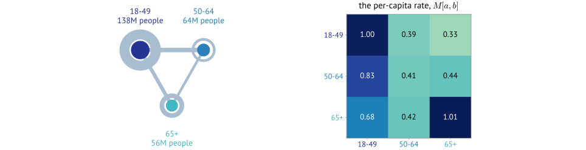
\[ \lambda_a(t) \;=\; \beta \sum_b \; M[a,b] \; \frac{I_b(t)}{N_b} \]
Groups, the contact within and between them, and the per-capita rate \(M[a,b]\) that a transmission model consumes. \(M\) fixes the age profile of the epidemic and \(R_0\) is the leading eigenvalue of the next-generation matrix built from it, and it is one of the few inputs that is measured rather than fitted to case data. Diaries are how it is measured, and whether mobility can measure it instead turns out to be dimension-dependent. Real numbers: the survey's coarse bins, Other setting, US populations; widths are total volume, the symmetric object.
The problem
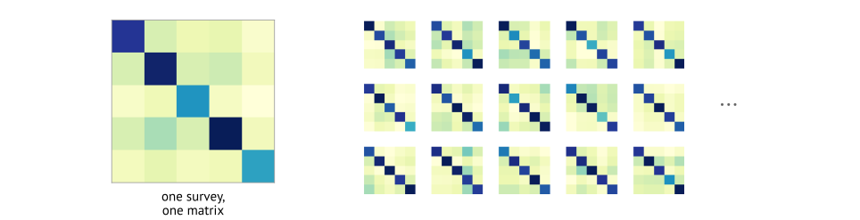
Tiles are illustrative. A diary study observes a few thousand respondents over two waves; the mobility panel observes tens of millions of devices over roughly 2100 days. Four orders of magnitude in people, three in time. Diary standard: Mossong et al. 2008; the reference used throughout is Epistorm-Mix (Litvinova et al. 2025), from co-authors on this work; demographic projection to unsurveyed settings: Prem et al. 2017.
The reference
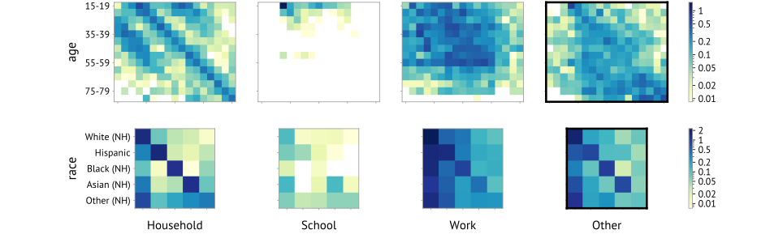
Epistorm-Mix, adult respondents; age in five-year bins and race in five, rows respondent and columns contact. The four settings partition Total exactly. A phone panel cannot see inside a household and ours is adults only, so of these four the one it could plausibly reproduce is community contact: Other, at \(29\%\) of all reported contacts. Every comparison that follows is against the reciprocity-corrected Other matrix. A cell is contacts per capita per day and agreement is Pearson correlation on log cells, \(\log r\), which is scale-free.
The data
Location-based services data: GPS pings contributed with permission through mobile apps, aggregated by a vendor into stops, a place and a dwell time. Epistorm, the CDC-funded outbreak analytics centre, already turns this feed into daily county-level mobility indices and publishes them on a public dashboard. The contact matrices come off the same pipeline, one step further along. What the panel never carries is who anyone is.
Construction · 1 of 2
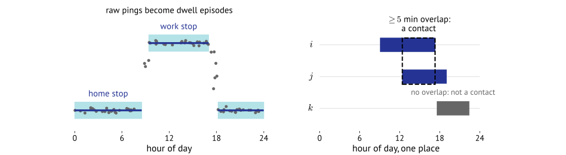
Dwell episodes, not raw pings. Spatial and temporal overlap with a five-minute floor. Overlapping-stop artefacts in the vendor feed are repaired upstream.
Construction · 2 of 2
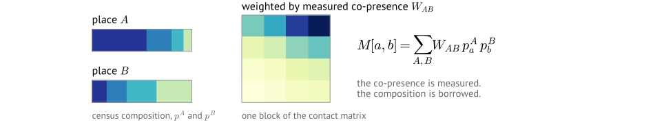
Devices are anonymous, so the label is the census composition of the residence tract, applied to every resident of it. This is proportional mixing, and it is an ecological inference: a group-level distribution standing in for an individual attribute. Every result that follows is a consequence of it.
Results · 1 of 2
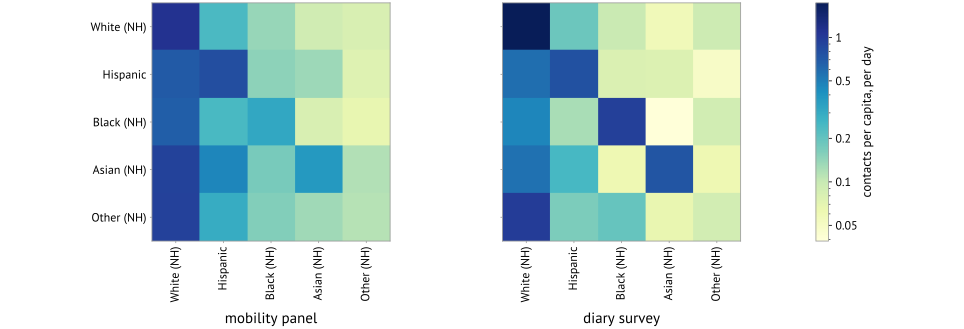
May 2024, Other setting, reciprocity-corrected, 25 cells: \(\log r = 0.903\). Panels are rescaled to a common total, so colour compares shape only; \(\log r\) is scale-free either way. Fitting one global scalar instead puts \(80\%\) of cells within a factor of two.
Results · 2 of 2
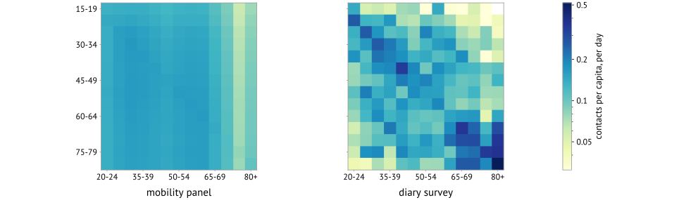
Five-year bins, 181 cells over the subset the survey can report: \(\log r = 0.324\). Panels rescaled to a common total, as before. The survey has a diagonal and the parent-child ridges off it; we have neither. Three coarse bins reach \(0.661\), and a two-parameter power-law calibration still only reaches \(R^2 = 0.11\).
Mechanism · 1 of 2
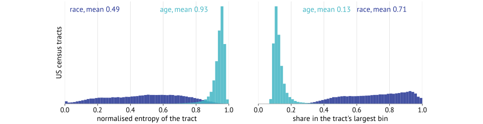
All 84,532 populated US tracts, ACS 2019–2023. Dissimilarity runs \(0.33\) to \(0.61\) across race bins against \(0.17\) to \(0.35\) across age bins.
Mechanism · 2 of 2
\[ p_a^A \approx p_a^{\text{nat}} \;\;\forall A \quad\Longrightarrow\quad M[a,b] \;\propto\; p_a^{\text{nat}} p_b^{\text{nat}} \sum_{A,B} W_{AB} \]
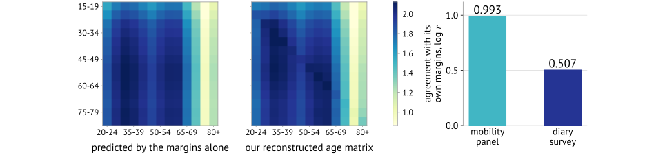
The prediction carries the marginals and nothing else. Our age matrix agrees with it at \(\log r = 0.993\). The control is the same test on the survey, whose own margins reproduce it at only \(0.507\). Effective rank says the same thing: \(1.11\) for our matrix against \(3.69\) for the survey.
Testing that explanation
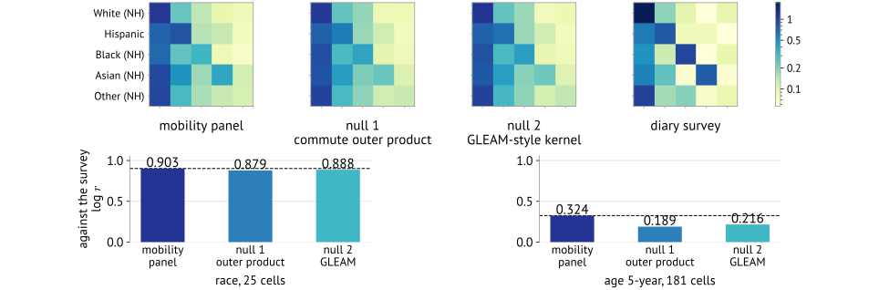
Two nulls, neither containing a single device: census commuting flows as contact opportunity, and the GLEAM-style kernel that allocates commuters in time and mixes them inside each patch. On race the three span \(0.879\) to \(0.903\), which 25 cells cannot separate. On age we beat both nulls, but from \(0.324\), so the margin is real and the level is useless. Null 1 also reproduces our own matrix at \(\log r = 0.981\).
Can the label be fixed? · 1 of 2
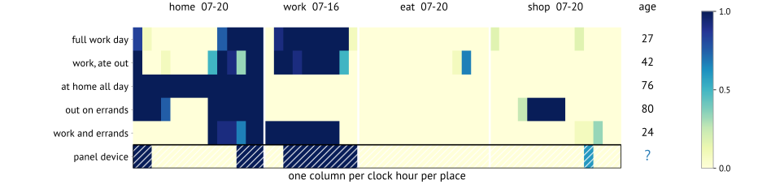
Rows are people, columns are the 52 features the model actually uses: the fraction of each clock hour spent at each place, one block per place. Five real diary days, rebuilt minute by minute from the 2024 survey. The hatched row is a panel device: its stops give the same 52 numbers and no age. A replicate-weighted multinomial logit fills it in, giving \(q_i(a)\) per device. The representation is per hour on purpose: the model sees when, not just how long.
Can the label be fixed? · 2 of 2
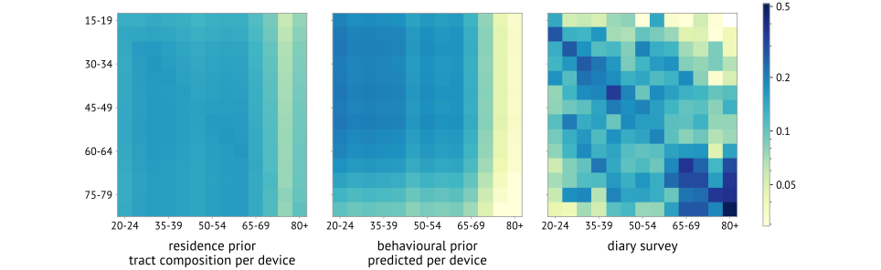
Age, five-year bins, weekday only, against the reciprocity-corrected Other survey. Community contact gets worse, \(\log r\;0.324 \to 0.082\), with zero of 4000 bootstrap draws favouring the predicted label. Work gets better, \(+0.170\), and that is the tell rather than a consolation: the behavioural prior is a proxy for employment, and Work is the one setting where employment is the right answer. Each panel rescaled to a common total.
Consequence · 1 of 2
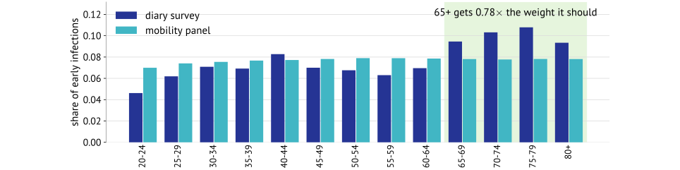
The dominant eigenvector of each age matrix, normalised to sum to one. With susceptibility equal across groups the next-generation matrix is proportional to the contact matrix, so this is the relative share of infections in each age group during early exponential growth. The two agree at cosine \(0.979\) and \(R_0\) is off by only \(1\%\), so aggregate quantities survive; the oldest groups, which drive severity, do not. Our main-pipeline matrix, residence prior, against the reciprocity-corrected Other survey.
Consequence · 2 of 2
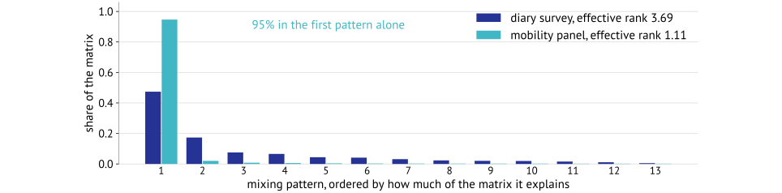
Singular values of each matrix, normalised to sum to one: the share of the matrix explained by each independent mixing pattern. Effective rank is the participation ratio \(1/\sum_k s_k^2\), which is \(1\) for a rank-one matrix and \(13\) for a flat spectrum. The survey spends its structure across several patterns; we put \(95\%\) into one. This is the rank-one result of the mechanism slide, as a number.
Conclusions · 1 of 2
| dimension | tract entropy | dissimilarity | vs survey | recommendation |
|---|---|---|---|---|
| race and ethnicity | 0.49, broad | 0.52 | 0.90 | use, and report a null |
| income, urbanicity | 0.87, intermediate | 0.28 | 0.34 | marginals only, not the matrix |
| age | 0.93, a spike | 0.21 | 0.32 | do not use at usable binnings |
Mobility recovers the mixing structure of attributes that space already sorts. The heterogeneity statistics are computable before any mobility data is loaded, so this is a screening rule rather than a post-hoc one.
Race and age are the Other setting, reciprocity-corrected. Income is the honest middle case, and its setting split was not run: its marginals transfer at \(0.80\) while the matrix reaches \(0.34\) on Total.
Conclusions · 2 of 2
real variance in the label across devices, not a tract average repeated
not a function of the same quantity that drives contact volume. This is the condition our behavioural prior fails.
labels genuinely linked to devices, which no mobility feed provides
Behaviour derived from mobility supplies the first condition only, and weakly: the structure it injects is \(0.017\) against the \(1.77\) a perfect per-device label would give. The remedy has to come from outside the mobility stream.
Summary
Mobility recovers the mixing structure of attributes that space already sorts. Screen the dimension first, and report a null.
The binding constraint is the demographic label, not the contacts, and no feature built from mobility fixes a label that is not identified.
Ankit Ramakrishnan · ramakrishnan.ank@northeastern.edu · Epistorm, Network Science Institute, Northeastern University. Full methods note available on request, and thanks to the Epistorm-Mix team at Indiana.
Appendix · A1
\[ \widetilde M[a,b] = \sum_{i,j} W_{ij}\, p_a^i\, p_b^j, \qquad M[a,b] = \frac{\widetilde M[a,b]}{N_a}, \qquad \widetilde M[a,b] = \widetilde M[b,a] \]
Full derivations are in the methods note, available on request.
Appendix · A2
\[ F^{\text{sym}}_{ij} \;=\; \tfrac{1}{2}\big(F_{ij} + F_{ji}\big) \]
\[ M^{\text{outer}}[a,b] \;=\; \frac{1}{N_a}\sum_{i,j} F^{\text{sym}}_{ij}\; p_a^i\, p_b^j \]
\(F_{ij}\) is the ACS county-to-county commuting count, residence \(i\) and workplace \(j\), symmetrised so the extensive matrix is exactly symmetric and reciprocity holds by construction. \(72.6\%\) of its weight is intra-county \(F_{ii}\), and \(36\%\) of off-diagonal edges run one way only, so symmetrising is a modelling choice rather than a formality. The kernel has no timescale and no destination-pool normalisation, which is what motivates null 2. Notation below.
Notation
| symbol | meaning | units |
|---|---|---|
| \(i,\, j\) | county indices: residence and workplace | — |
| \(a,\, b\) | demographic bin indices, of the ego and the contact | — |
| \(F_{ij}\) | ACS commuters living in \(i\) and working in \(j\); \(F_{ii}\) is the within-county row and holds \(72.6\%\) of the weight | workers |
| \(F^{\text{sym}}_{ij}\) | the same flow symmetrised, \(\tfrac{1}{2}(F_{ij}+F_{ji})\), so an edge is a shared opportunity rather than a direction | workers |
| \(p_a^i\) | share of county \(i\)'s residents in bin \(a\), from the census; \(\sum_a p_a^i = 1\) | — |
| \(N_a\) | national population in bin \(a\), the per-capita denominator | people |
| \(M^{\text{outer}}[a,b]\) | the null's contact matrix | contacts per person per day |
The sum runs over county pairs where both endpoints have a census composition row. \(p_a^i p_b^j\) is the proportional-mixing step, identical to the one in our own pipeline, which is what makes this a fair null rather than a different model.
Appendix · A3
\[ T_{ii} = \frac{1}{1+\sigma_i/\tau}, \qquad T_{ij} = \frac{\sigma_{ij}/\tau}{1+\sigma_i/\tau}\;(j \neq i), \qquad \textstyle\sum_j T_{ij} = 1 \]
\[ N_a^{(j)} = \sum_i p_a^i N_i T_{ij}, \qquad N^{*}_j = \sum_i N_i T_{ij} \]
\[ M^{\text{GLEAM}}[a,b] = \frac{1}{N_a}\sum_i p_a^i N_i \sum_j T_{ij} \frac{N_b^{(j)}}{N^{*}_j} = \frac{1}{N_a}\sum_j \frac{N_a^{(j)} N_b^{(j)}}{N^{*}_j} \]
Balcan et al. 2010 §4.2–4.3, with \(\sigma_{ij} = F_{ij}/N_i\) the per-resident commuting rate and \(\tau\) the return rate. \(T_{ij}\) is the stationary fraction of patch \(i\)'s residents currently at \(j\): a mobility matrix, asymmetric, upstream of the demographic step. It enters twice, as time spent at \(j\) and inside who else is there, and summing it out gives the compact right-hand form. Contact within a patch is mass-action with \(c = 1\) absorbed into the scale, drawn uniformly from the \(N^{*}_j\) present. The \(\tau \to \infty\) limit gives pure residence-based mixing, verified to \(3\times10^{-11}\). Notation below.
Notation
| symbol | meaning | units |
|---|---|---|
| \(N_i\) | population of patch \(i\) | people |
| \(\sigma_{ij}\) | per-resident rate of leaving \(i\) for \(j\), \(F_{ij}/N_i\), with \(\sigma_{ii} = 0\) | day\(^{-1}\) |
| \(\sigma_i\) | total leaving rate, \(\sum_{j \neq i}\sigma_{ij}\); typically \(0.3\) to \(0.5\) for US counties | day\(^{-1}\) |
| \(\tau\) | rate of returning home, so \(1/\tau\) is the mean visit length; \(\tau = 3\) here, an eight-hour workday | day\(^{-1}\) |
| \(T_{ij}\) | stationary share of \(i\)'s residents currently at \(j\); rows sum to 1, and it is not symmetric | — (a time share) |
| \(N_a^{(j)}\) | bin-\(a\) people present at \(j\), carrying their residence bin with them | people |
| \(N^{*}_j\) | everyone present at \(j\), the mixing-pool size | people |
| \(c\) | per-person contact rate inside a patch, set to \(1\) and absorbed into the overall scale | day\(^{-1}\) |
\(T_{ij}\) contributes pure time shares and \(c\) contributes the \(\text{day}^{-1}\), which is how \(M^{\text{GLEAM}}\) comes out in contacts per person per day. Dividing by \(N^{*}_j\) is the one thing null 1 lacks: contact rates fall as the local pool grows.
Appendix · A4
\[ \text{within a unit: } \frac{n(n-1)}{N(N-1)} \qquad \text{across two units: } w_{\text{ego}}\, w_{\text{alter}} \]
Devices are grouped into units of known population, each with its own panel penetration \(w\). Weighting applies to pairs, not to individual contacts. A null or zero weight contributes \(0\).
Without this step a cell reports where the panel is dense. With it, a cell is a contacts-per-capita rate, the quantity the survey also reports.
Appendix · A5
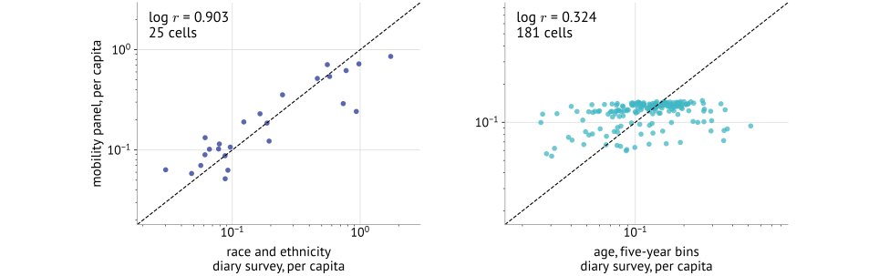
Distinct contacts per capita against the survey, log axes, identity line. This is the one figure scaled by the fitted global \(\beta\) rather than to a common total, because the identity line is the reference. No exponent is applied. The age panel collapses onto a narrow horizontal band: each of our ego rows spans far less than the survey's.
Appendix · A6
The survey matrix is a per-respondent mean, \(M^{\text{survey}}[a,b] = \frac{1}{N_a}\sum_r C^r_{ab}\), and does not enforce \(M[a,b]N_a = M[b,a]N_b\). Our matrices and both nulls satisfy it exactly, so comparing against the raw survey charges the model for the reference's own asymmetry.
| Other setting, \(\log r\) | raw survey | reciprocity-corrected |
|---|---|---|
| race, 25 cells | 0.893 | 0.903 |
| age 5-year, 181 cells | 0.526 | 0.324 |
The correction helps race and costs age a great deal: much of our apparent age agreement was the survey's own reporting asymmetry, not shared structure.
Appendix · A7
\[ M^{\text{survey}}[a,b] \;\approx\; \beta \,\big(M^{\text{model}}[a,b]\big)^{\gamma} \]
| dimension | \(\beta\) | \(\gamma\) | \(R^2\) | within \(2\times\) | row spread ratio |
|---|---|---|---|---|---|
| race, 5 bins | 0.071 | 1.16 | 0.815 | 80% | 1.26 |
| age, 5-year | 0.069 | 0.74 | 0.105 | 83% | 2.33 |
Other setting, reciprocity-corrected. For race \(\gamma \approx 1\), so one scale factor suffices; for age no exponent helps. This fit is reported, never applied to a displayed matrix: \(\gamma\) would bend the colour scale and hide the dynamic-range compression that is the age result. Per-row \((\beta_a,\gamma_a)\) reaches 91 to 95% of age cells within \(2\times\) on \(2K\) parameters, so it bounds what any monotone transform can do rather than proposing an estimator.
Appendix · A8
The stop table clips evening dwell. Stop start dates are derived from the vendor's event date and then clipped to the day boundary, which truncates episodes running past midnight: \(20.2\%\) of raw stops are affected and \(11.66\%\) of all dwell time is discarded.
It matters for the behavioural prior, whose features are shares of dwell. It does not explain the Other result: the oldest bins are under-represented at every hour of the day, not only in the evening, at \(0.689\) of their population share on a contact-weighted basis.
Quantified separately from the matrix pipeline; the correction is not yet applied to the results shown.
Appendix · A9
\[ q_i = \bar q + \delta_i \quad\Longrightarrow\quad \text{only } \textstyle\sum_{\text{contacts}} \delta_i \otimes \delta_j \text{ adds rank}, \qquad \lambda = \rho_q \,\mathrm{CV}_q^{2} \]
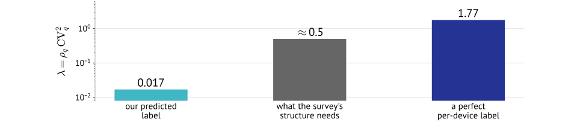
\(\rho_q\): correlation of the labels of two people in contact. \(\mathrm{CV}_q\): how much the label varies at all. Splitting the label into a population mean plus a per-device deviation, the mean reproduces proportional mixing exactly, so only the deviations can add rank.
Appendix
| step | what is done |
|---|---|
| bins | restrict both matrices to the \(13\) age bins present on both axes; the survey's reliable subset is \(14\) ego by \(13\) alter |
| eigenvector | \(w, v = \mathrm{eig}(M)\), take the largest real part, normalise \(|v|\) to sum to one. \(M > 0\), so Perron-Frobenius makes that eigenvalue real and the eigenvector positive |
| \(R_0\) ratio | compare \(\lambda_1/\sum_{ab} M[a,b]\) across the two matrices, so it does not depend on the fitted level: \(0.987\) |
| agreement | cosine similarity of the two eigenvectors: \(0.979\) |
| \(65+\) weight | sum the eigenvector over \(65\text{-}69\) to \(80+\), then take the ratio: \(0.78\) |
| effective rank | singular values normalised to sum to one, then \(1/\sum_k s_k^2\): \(1.11\) against \(3.69\) |
Both quantities are scale-invariant, which is why no calibration is applied. Equal susceptibility is what makes the eigenvector readable as an infection share; with an age-dependent \(s\) the next-generation matrix becomes \(\mathrm{diag}(s)\,M\) and that comparison would need redoing, though the effective rank would not change. Race for comparison: effective rank \(1.91\) against \(2.93\), cosine \(0.957\).
Appendix
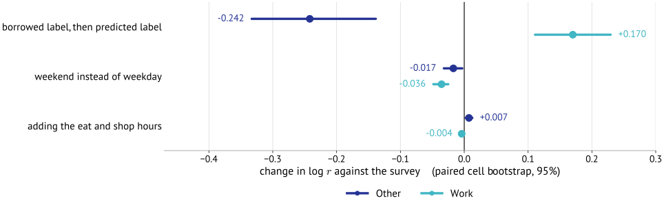
Five-year bins. Intervals are a paired cell bootstrap: resample the 181 matrix cells with replacement, recompute \(\log r\) for both arms against the same resampled reference cells, and take the difference, 4000 times. Other falls \(0.324 \to 0.082\), with zero of 4000 draws favouring the predicted label. Every other alternative we tried is an order of magnitude smaller.
Appendix · A10
ramakrishnan.ank@northeastern.edu · full methods note available on request.